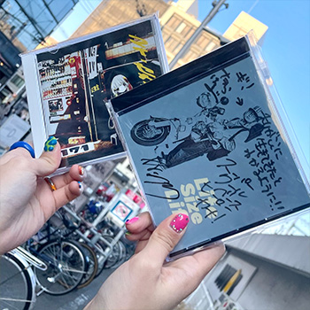
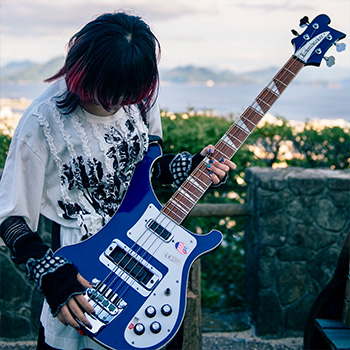
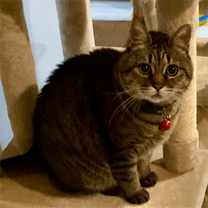
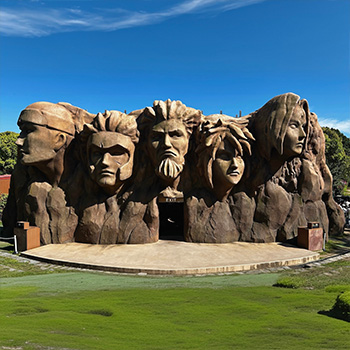

Story
私のこれまでの歩み
▼誕生！
広島県三次市で生まれました！
小さい頃から好奇心旺盛で、興味を持ったことにはとことんのめり込む性格でした。ゲームや漫画、小説に夢中になると時間を忘れてしまうほど没頭していました。
絵を描いたり空想を広げたりすることも好きで、一つのことに集中して取り組む力はこの頃から培われたと感じています。
▼広島修道大学へ入学
広島修道大学 心理学科へ入学し、主に認知心理学や集団心理学を専攻していました。
サークルはコピーバンドサークルに所属し、未経験からベースを始めました。
アルバイトは、お好み焼き屋でホールと調理、マツダスタジアムでチケットをもぎるスタッフ、株式会社中国放送(RCC)ではテロップの誤植確認や放送時にテロップを画面に出すお仕事を経験し、
さまざまな人と関わる中で、状況に応じて行動する力を身につけました。
▼株式会社中国放送に派遣社員として入社
大学のアルバイト時代にお声がけいただき、大学卒業後は株式会社中国放送（RCC）のライブラリー部へ派遣社員として入社しました。
放送された映像の管理や、映像に映っている人物や出来事を言葉にして記録する入力業務を担当していました。
業務の中では、映っているものが何なのか分からず苦労することもありましたが、一つひとつ調べて理解できた時の達成感や、知識が積み重なっていく感覚にやりがいを感じていました。
▼株式会社中国放送を退職
株式会社中国放送(RCC)を退職しました。
今後のキャリアを考える中で、Webの分野に興味を持つようになりました。
業務やこれまでの経験を通して、自分の手で形にできるWeb制作に魅力を感じるようになり
Web分野への転向を目指し退職を決意しました。
▼職業訓練校へ入学
Web制作に興味を持ち、基礎から体系的に学びたいと考え、職業訓練校 創造社リカレントスクール（これから始める!web動画編集&ホームページデザイン科）へ入学しました。 独学ではなく実務に近い環境で理解を深めたいという思いから、チームで制作に取り組む機会のある職業訓練校を選びました。 また、幅広い年代の方と関わりながら学ぶことで視野を広げ、成長したいと考えたことも理由の一つです。
▼現在
デザインやコーディング、動画編集などの基礎的な学習を終え、現在は企画立案の授業でLP制作に取り組んでいます。
制作は個人またはチームから選択できましたが、実務に近い形で経験を積みたいと考え、チーム制作を選択しました。現在は2人で架空のカフェのLPを制作しており、デザインの方向性のすり合わせや役割分担に苦戦しながらも、認識を共有しながら進めることの重要性を学んでいます。
また、個人ではJavaScriptやReactの学習にも取り組んでいます。
Like

音楽が好きです
バンドが大好きで、私生活の中でも大きな存在になっています。ライブのために県外まで遠征して見にいくこともあります。音楽は辛い時に支えとなり、気分を上げたい時に背中を押してくれたりと、日常のモチベーションを高めてくれる存在です。

バンドをしています
大学時代のサークル活動の名残で現在もコピーバンドを続けています。ベースは縁の下の力持ちと呼ばれる楽器で、目立つ存在ではありませんが、全体を支え、音楽を成立させる重要な役割を担っています。私自身もそのように周囲を支える存在でありたいと考えています。

猫が好きです
昔から猫と一緒に暮らしており、自然と猫が好きになりました。画像の猫ちゃんは、以前一緒に暮らしていた愛猫です。現在も実家に2匹の猫tやんがおり、何気ない仕草や表情に癒されています。

アニメ•漫画が好きです
アニメや漫画などの創作物が好きです。非現実的な世界観に入り込めるところが好きで、登場人物の考え方や成長に触れる中で、感情を動かされたり新しい気づきをもらうことも多いです。中でも「NARUTO」は、努力や人間関係が丁寧に描かれていて、多くの学びをもらった作品です。
Contact
下記メールアドレスにてご連絡ください。